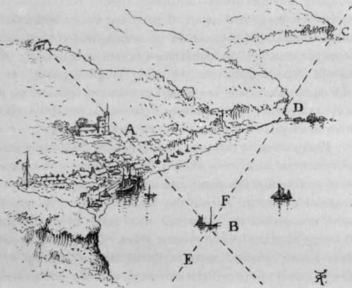

Introductory. Charts, Tides, Etc. Part 3
Description
This section is from the book "Sea Fishing", by John Bickerdyke. Also available from Amazon: Sea Fishing.
Introductory. Charts, Tides, Etc. Part 3
As the subscription is a nominal sum, the list of members ought to grow apace. I believe at present there are about three hundred, not including those belonging to the branch societies at Scarborough and Yarmouth, of which Mr. J. W. Blakey, editor of the ' Angler,' and Mr. Lovewell Blake are the honorary secretaries respectively. Some day the Society may become a power in the land, and its advice may be sought on the many difficult problems the Government have to face when legislating for the better preservation of sea fish. The opinions given by the professional sea fishermen are, as a rule, unconsciously biased by personal considerations. The worthy fellows are very apt to form rough and ready conclusions which a scientific observer with a quarter of their experience could say with certainty were inaccurate. The members of the British Sea Anglers' Society, on the other hand, come of a class consisting mainly of intelligent, educated men, and their observations on baits, the migration of fish, and kindred matters are likely to be of considerable value. Certainly in drawing general conclusions the educated, practical, amateur sea fisherman is less likely to go astray than the uneducated professional fisherman and the unpractical scientist. Talking of conclusions, I have endeavoured to explain in Chapter VIII. how trawling in territorial waters is not only inimical to the sport of the sea angler, but also most injurious to certain fisheries and to the local professional fishermen who depend upon them for a subsistence.
Ought I to offer an apology to sportsmen for including in this volume the chapter on the Ocean Fishing Rod ? The tackle used is anything but delicate—twisted wire is a constituent—and the bait is attached to a hook large enough to hang up a leg of mutton. Even into ocean fishing the rod has been of late years introduced, for it is necessary to boom out the line to keep the bait clear of the debris which is constantly being thrown overboard. Moreover, when a vessel is going at a high rate of speed, and a large fish seizes the bait attached to an unyielding line which is firmly fixed to the rail, as often as not there is a break. But the ocean fishing rod—a little thing of forty-five feet or so—takes the first shock, the line is often saved from disaster, and the giant mackerel of eastern seas are successfully gaffed and hauled on board. Whether it be considered sport or not, this method of fishing yields considerable amusement; and serves not only to relieve the monotony of a long sea voyage, but provides more or less excellent fresh fish for the table.
The chapter on Baits is one of the most important in the book, and I earnestly commend it to the attention of the tiro, together with the remarks on ' Where to go.' Those who know but little of sea fishing appear to have a general idea that the whole thing begins and ends in hiring a boat, rowing out straight to sea for a mile or so, coming to an anchor, and letting down to the bottom hooks baited with pieces of any refuse fish which can be obtained from the fishmonger. But sea fish are as local in their habits as those which dwell in fresh water, and whether fishing near the bottom, drift line fishing, or whiffing, it is of the first importance to go to places where the fish are commonly found, to use suitable baits, and to be sure to place them where they can be seen by the fish.
The man whose knowledge of nautical matters is limited to that derived from a sojourn of twenty minutes or so in or near a bathing machine at a South-coast watering-place may deem it a hopeless task to pick out a certain definite spot on the wide-waste of waters which spreads out all round our shores. The professional fisherman finds no difficulty in the matter, provided there is light enough to see particular marks on the coast. By marks are not meant chalk marks or anything of that kind, but trees, barns, headlands, hills, churches, homesteads, in fact anything sufficiently conspicuous for the purpose, and the more durable the better.
For every position on the open sea two sets of marks are necessary. In the diagram these are represented by two headlands to the eastward, and by a church tower and an old barn to the northward. We are stopping, say, in a little fishing village in Devonshire, in the bay at a, and we know that at the point b there is a noted ledge of rocks in the cavities of which dwell many enormous congers, large shoals of bream swimming near, which can be caught any night during the summer if the sea be not too rough. Of course we have a general idea of the direction, and know, or have been told, the bearings. That is to say, as soon as the second headland (c) opens out to the eastward we know we are on one line of the marks, and shall be in the desired position when, keeping the two headlands in a line, we also find the church in a line with the old barn on the hill-top.
The first thing, then, to do is to strike one pair of marks by steering out to sea until we can see the second headland c appearing or ' opening,' as sailors say. Immediately both headlands are visible we steer towards b, being careful to keep them in a line until we find the edge of the church tower in a line with the barn, when we know we are exactly on the right spot. If we lower our killick stone or anchor exactly at b and the tide is running strongly towards the westward, or there is an east wind blowing, we shall be carried beyond b to, let us say, e. To prevent being misplaced in this way it is necessary to row the boat back a sufficient distance, say to f, and then let go the anchor so that when the cable is paid out the little craft will be on the spot b.
Taking Marks.
Generally speaking, the sea angler will be glad to avail himself of the marks known to the fishermen, if he can discover them. I need not point out the extreme value of such knowledge. Whenever a good catch of fish is made, on a ground which is new, it is an excellent plan to enter the marks by which the place may be known again in a notebook or on a chart. In taking these new bearings the imaginary lines which are drawn towards each pair of marks should be at right angles or thereabouts, if possible, and the marks themselves should not be too near together. To take the part of the coast shown in the sketch as an example, the barn should be some considerable distance from the church. At night time it is extremely difficult, often indeed impossible, to take new marks or place one's craft on old ones, unless there are certain well-known lights which will serve as a guide ; as, for instance, lighthouses, and lights coming from the windows of houses or at the head of a pier.
Continue to:
- prev: Introductory. Charts, Tides, Etc. Part 2
- Table of Contents
- next: Introductory. Charts, Tides, Etc. Part 4
Tags
fishing, hooks, bait, fishermen, spanish mackerel, mackerel fishing